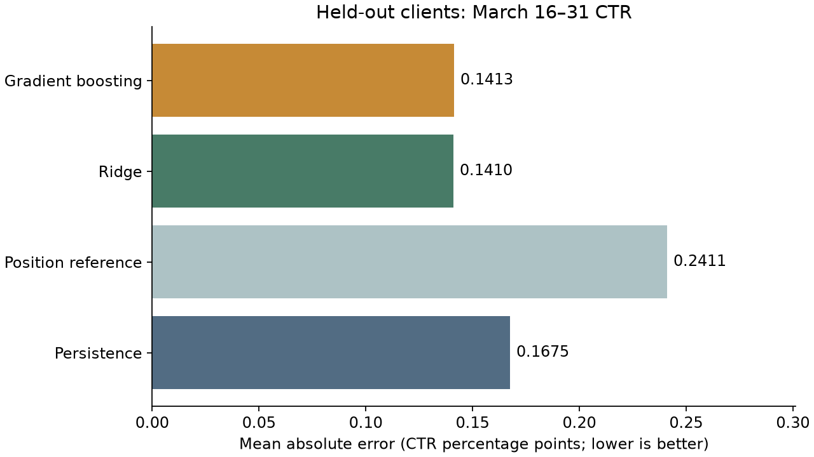
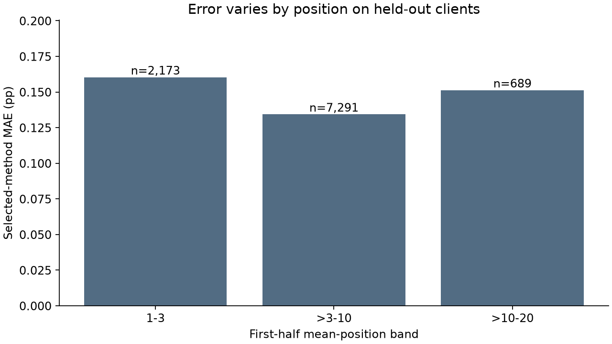
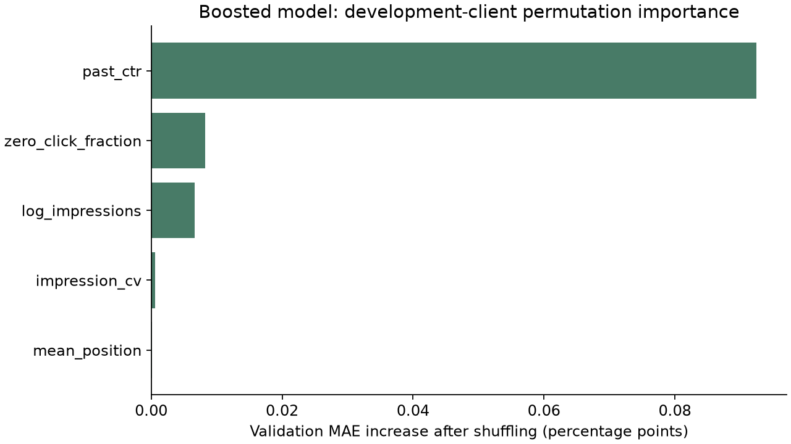

Abstract
This study asks whether a small model improves prediction of later click-through rate while supporting a transparent queue of pages for human review. It uses 9,841,378 daily records from the March 2026 FlyRank warehouse partition, with March 1–15 features and March 16–31 observed outcomes. Five past-only features feed fixed Ridge and gradient-boosting candidates, compared with persistence and a position-band reference on disjoint client groups. Ridge, selected on validation clients, reduces held-out-client mean absolute error from 0.1675 to 0.1410 CTR percentage points, while the top-queue proxy precision ties the simpler baseline. The results support cautious review prioritization and improved CTR estimation within this slice, not a claim that edits cause additional clicks.
A review queue is a resource decision
A content specialist has time to inspect a few pages, not every page receiving search impressions. A low click-through rate may reflect a weak snippet, but it may also reflect search intent, device mix or answers already shown on a results page. A score should identify a question worth investigating, not prescribe an edit.
This study separates two tasks: estimating later observed CTR, and ranking current review opportunities with a readable rule. False positives waste reviewer time and can encourage unnecessary changes; false negatives leave useful opportunities unexamined.
A documented slice, with explicit exclusions
The source is the FlyRank warehouse release v20260703, specifically fact_content_daily_performance/month=2026-03/data_0.parquet. A raw row is one date × pseudonymized client × content item. The partition contains 9,841,378 rows, 55 clients and 331,437 content items, spanning March 1–31, 2026. The study does not scan or claim coverage of all 78.8 million daily records.
Three executed checks verify the grain, count/date span and availability. No duplicate daily keys or missing keys were found. Search data is available on 3,611,061 rows, GA4 on 413,966, and both on 364,347. All search aggregation filters gsc_data_available IS TRUE; 163,189 impression-positive, search-available rows lack a positive position and are excluded from the position numerator and denominator.
Feature eligibility requires all 15 first-half dates available, at least 500 first-half impressions and a valid mean position of 1–20. This produces 28,862 pages. Requiring complete second-half availability and 500+ outcome impressions leaves 25,772 pages for evaluation; the 3,090 exclusions do not disappear from the operational queue merely because their later outcome is unmeasurable. No GA4, query-table or product-flag features are used.
Past-only features. Separate clients. Fixed candidates.
March 1–15 supplies the inputs; March 16–31 supplies the observed target, 100 × clicks / impressions. The cutoff is retrospective and assumes the first-half reports have arrived; the study does not simulate live reporting latency. No recreated rule flag is a training target.
| Input | First-half calculation |
|---|---|
| Past CTR | Total clicks / impressions × 100 |
| Impression volume | log(1 + total impressions) |
| Mean position | Impression-weighted valid daily average position |
| Impression variation | Daily standard deviation / daily mean |
| Zero-click fraction | Impression-active days with no clicks / impression-active days |
Client assignment is deterministic: SHA-256 of ctr-v1: plus the client pseudonym, first eight hex digits modulo five. Folds 2–4 train, fold 1 validates and fold 0 tests. IDs are only grouping keys, never inputs. A client cannot cross partitions.
| Partition | Pages | Clients |
|---|---|---|
| train | 7687 | 16 |
| validation | 7932 | 5 |
| test | 10153 | 6 |
Persistence predicts that later CTR equals earlier CTR. The position reference predicts the training-client median within bands 1–3, >3–10 and >10–20. Fixed learned candidates are standardized Ridge (alpha=1) and histogram gradient boosting (100 iterations, 15 leaves, 40 minimum samples per leaf, L2=1, early stopping off, seed 42). There is no hyperparameter search. Lowest validation page MAE selects the method, allowing a baseline to win.
ML-04 deliberately adds the later CTR as an input and obtains an invalid near-zero error, then deletes that column and restores the honest result. Test clients are not used in that demonstration. The final study reports identical-row comparisons, an equal-client macro error and a 2,000-draw paired client-bootstrap interval.
Better CTR estimates; no demonstrated ranking gain
Validation selected Ridge
| Method | Pages | Clients | MAE (pp) | Impression-weighted MAE (pp) | Client-macro MAE (pp) |
|---|---|---|---|---|---|
| Persistence | 7932 | 5 | 0.15355 | 0.12446 | 0.18473 |
| Position reference | 7932 | 5 | 0.23954 | 0.23065 | 0.27436 |
| Ridge | 7932 | 5 | 0.13498 | 0.11239 | 0.16180 |
| Gradient boosting | 7932 | 5 | 0.13564 | 0.10939 | 0.17858 |
Final test on six unseen clients
| Method | Pages | Clients | MAE (pp) | Impression-weighted MAE (pp) | Client-macro MAE (pp) |
|---|---|---|---|---|---|
| Persistence | 10153 | 6 | 0.16751 | 0.14644 | 0.17514 |
| Position reference | 10153 | 6 | 0.24107 | 0.23157 | 0.24919 |
| Ridge | 10153 | 6 | 0.14102 | 0.11925 | 0.14819 |
| Gradient boosting | 10153 | 6 | 0.14130 | 0.11512 | 0.14793 |

Ridge reduces headline test MAE by 15.82%. The selected-minus-persistence equal-client error difference is -0.02695 pp, with an exploratory paired client-bootstrap 95% interval of -0.05010 to -0.00821 pp. There are only six test clients, so this is not evidence of broad seasonal or population-wide reliability. Boosting has slightly lower impression-weighted error, but Ridge remains selected under the predeclared validation rule.
For the directional proxy “future CTR remains below the training position-band reference,” the rule and both models each score 1.00 at K=10 and K=50, against a 0.74146 base rate. All selected top items have positive gap scores. This easy-at-the-top proxy does not distinguish which pages would benefit from edits. Independent actionability precision is unmeasured.
What the models miss

The largest-error examples include a CTR drop from 5.88% to 1.39% where Ridge predicts 3.79%, and jumps from roughly 0.97% and 1.17% to 2.97% and 2.90% where it predicts below 0.84%. Five historical aggregates miss abrupt changes. Query mix or changing search results are plausible explanations, not observed causes.

Outcome-volume sensitivity
| Minimum outcome impressions | Pages | Ridge MAE (pp) | Persistence MAE (pp) |
|---|---|---|---|
| 500 | 10153 | 0.14102 | 0.16751 |
| 1000 | 7435 | 0.12942 | 0.15798 |
| 3000 | 3243 | 0.11486 | 0.14267 |
Higher thresholds evaluate a narrower, better-measured population. These are descriptive checks, not a reason to replace the frozen primary result.
The boundary of the evidence
- One March window cannot establish generalization across seasons or later months. The last warehouse month was not used in development or in these results.
- Coverage and impression filters select established, sufficiently measured pages. Client sizes differ, and the final test includes only six clients.
- Aggregate position does not control query intent, device, country, branding or search-result layout. Reporting lag is not modeled.
- No page titles, URLs, private queries or client identities are inferred. The recommendations below are numerical evidence reviews, not live-page inspections.
- No intervention, independently labeled actionability or causal design is available. A positive gap is neither a guaranteed defect nor recoverable clicks.
Operational choice: retain the transparent baseline queue. Ridge improves CTR estimation here, but the experiment does not show that a more complex review ranking yields better edits.
Review first. Edit only with supporting evidence.
The frozen rule compares first-half CTR with training-client position-band medians, then ranks positive gaps by gap_pp / 100 × first_half_impressions. It yields 18,445 local candidates and one reason code, BELOW_POSITION_REFERENCE. Reference CTR is not monotonic across the first two position bands in this slice; that signal is explicitly marked MIXED in ML-07.
| Rank | Content pseudonym | Review action and evidence | What could make it wrong |
|---|---|---|---|
| 1 | content_7c6373141eae744a | Review search intent and snippetCTR 0.059% vs reference 0.391%; 86,860 impressions; gap score 288.8. | Large exposure can magnify a small gap; check query mix before editing. |
| 2 | content_8e1334d6356668e3 | Review search intent and snippetCTR 0.002% vs reference 0.391%; 58,553 impressions; gap score 228.1. | Search-result answers may explain low CTR without a snippet defect. |
| 3 | content_65c75874a23fca87 | Review search intent and snippetCTR 0.027% vs reference 0.391%; 55,680 impressions; gap score 202.8. | A broad position band does not control device and country mix. |
| 4 | content_acbcc847f8996314 | Review search intent and snippetCTR 0.159% vs reference 0.391%; 83,715 impressions; gap score 194.5. | Daily average rank can hide query-level position changes. |
| 5 | content_34a70fea29d15f24 | Review search intent and snippetCTR 0.024% vs reference 0.284%; 73,639 impressions; gap score 191.4. | Reference-client medians may not transfer to this content niche. |
| 6 | content_945d6ff91386c817 | Review search intent and snippetCTR 0.004% vs reference 0.391%; 49,314 impressions; gap score 190.9. | Informational intent may justify low CTR. |
| 7 | content_1642f339bd6e7c8d | Review search intent and snippetCTR 0.034% vs reference 0.391%; 52,378 impressions; gap score 186.9. | A few highly exposed queries can dominate the aggregate. |
| 8 | content_f6116743b00afc2d | Review search intent and snippetCTR 0.016% vs reference 0.391%; 49,619 impressions; gap score 186.1. | A short event can dominate this 15-day window. |
| 9 | content_b99ea6861864dea5 | Review search intent and snippetCTR 0.202% vs reference 0.391%; 91,474 impressions; gap score 172.8. | Changing an appropriate title can reduce performance. |
| 10 | content_36fc1ee501ec072d | Review search intent and snippetCTR 0.024% vs reference 0.391%; 46,199 impressions; gap score 169.7. | Measurement coverage does not guarantee comparable intent. |
A specialist should verify the underlying search intent and snippet, check authorized query/device context if available, and record a human decision before changing anything. Leave appropriate pages unchanged. Large clients can dominate volume-based scores; evaluate reviewer capacity by client before adopting the queue operationally.
From approved data to executed notebooks
Source and instructions: project repository · reproduction guide · executed capstone.
Download the approved March partition using your own dataset access and place it at data/warehouse/march_2026.parquet. Install work/study-requirements.txt, then run:
python work/execute_study_notebooks.py
python work/build_paper.pyDuckDB aggregates daily rows before pandas receives a feature frame. Seed: 42. Raw data and queue CSVs remain outside Git. The public repository contains only selected pseudonymized examples, charts and aggregate receipts. No dataset or token is included in the paper.
ML-03: task framing · ML-04: data contract · ML-07: baseline review
Dataset SHA-256: 6ebd367f05932238df05b193f9cfb9cc7839d7856b65ef74b5a122d5fadef589
| Package | Version |
|---|---|
| duckdb | 1.5.5 |
| pandas | 3.0.5 |
| numpy | 2.4.6 |
| scikit-learn | 1.9.0 |
| matplotlib | 3.11.1 |
Data credit
Built on the FlyRank ML Internship dataset. Source: FlyRank/internship-warehouse, pseudonymized release v20260703. The approved release is used for research and education under its non-redistribution terms.